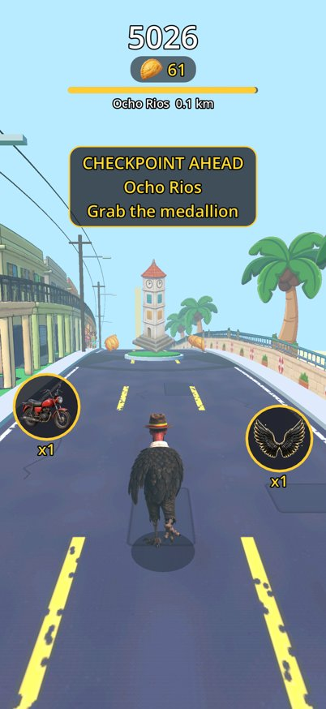
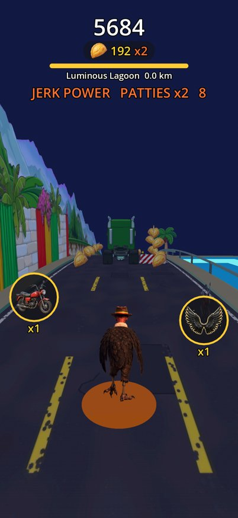
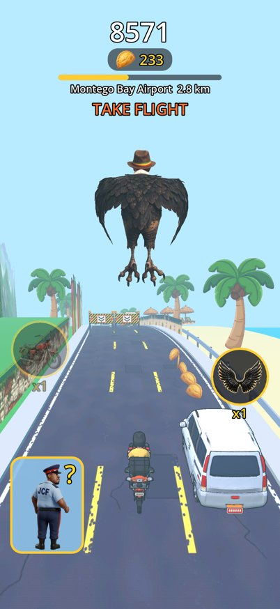

Jankro Run: help and support
Run John along Jamaica's North Coast, from Fern Gully to the Negril Lighthouse, where Kay is waiting, with Officer Mackenzie right behind him.



Contact us
Questions, problems or ideas: email us and we will get back to you.
It helps to say which device you play on (for example iPhone 17 or iPad) and what happened.
How to play
- Swipe left or right to change lanes, up to jump and down to slide.
- Jump barriers and potholes, slide under overhead barriers, and go around vehicles and roundabouts.
- Collect beef patties: they are your score and your money for the shop.
- Jerk chicken: for 8 seconds nothing trips you, and patties fly to you and count double.
- Motorbikes are kept at the left of the screen: press one to ride for 6 seconds, smashing through everything.
- Wings (Take Flight) are kept at the right: press them to fly over everything, or just after a crash to save the run.
- Collect the medallion at each landmark to be able to start from there next time.
- Tap the screen to pause. "How to Play" on the home screen explains it all in the game.
Questions
How long is the journey? About 30 minutes of running from Fern Gully to the Negril Lighthouse, or about 15 in Easy mode (the mode button is on the home screen).
Where is my progress kept? On your device only. Your patties, checkpoints and best scores stay there between games. There are no accounts, so deleting the game deletes your progress.
Do I have to watch adverts? No. After a crash you can choose to watch an advert to carry on from where you fell, or to double the patties from your run. An advert only plays when you tap one of those buttons.
Does anything cost real money? No. Everything in the shop is bought with patties you collect in the game.